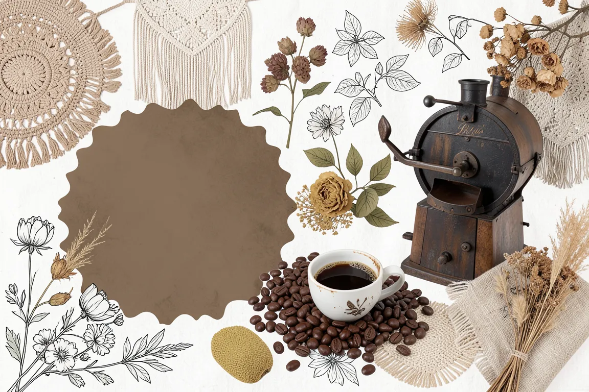

Jordfarger, håndtegnede blomster, makramé og vevde mønstre, buede former, varm fotografi og avslappet håndskrift. Det viser en frisinnet, naturlig og håndverksbasert smak.

Kjerneidé
Siden er et levd, frisinnet rom: naturlig, lagdelt og varmt.
Designprinsipper
Bygg paletten av 4 til 6 jordfarger (terrakotta, sand, salvie, sennep, plomme) med metning på 25 % til 55 %.
Bruk buer som hovedform: bildemasker med en toppradius på 999px og en bunnradius på 0 til 24px.
Legg 2 til 4 mønsterfyll (blomster, makramé, ikat, prikker) ved 8 % til 20 % dekning bak seksjoner.
Par en varm seriff til display på 48px til 88px med en håndskriftaksent på 28px til 40px og en humanistisk sans på 16px.
Sett fotografiet varmt (fargetemperatur +10 % til +20 %) med korn på 3 % til 6 % og naturlig lys.
Legg til organiske skillelinjer: en bølgelinje på 2px til 3px eller en bølgekant på 16px til 24px.
Hold hjørnene myke: radius på 16px til 32px på kort og 999px på etiketter.